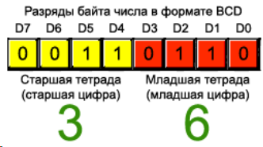

Копируем проект для LCD44780, включаем I2C в режиме I2C (ага). В настройках больше ничего менять не требуется (только если прерывания от I2c включить, но этот пример работает без них). Активировались порты PB6 и PB7 для подключения устройств по шине. Генерируем код и добавляем 4 файла: 2 для RTC и 2 для I2C.
//ds3231.c
#ifndef __DS3231_C__
#define __DS3231_C__
#include "stm32f4xx_hal.h"
#include "ds3231.h"
/*
uint8_t dsConvertFromDec(uint8_t value)
{
uint8_t result = (value >> 4)*10 + (value & 0x0F);
return result;
}
uint8_t dsConvertFromBin(uint8_t value)
{
uint8_t result = ((value / 10) << 4) | (value % 10);
return result;
}
*/
#endif
//ds3231.h
#ifndef __DS3231_H__
#define __DS3231_H__
#define DS_RTC_SEC 0
#define DS_RTC_MIN 1
#define DS_RTC_HOUR 2
#define DS_RTC_DAY 3
#define DS_RTC_MONTH 5
#define DS_RTC_YEAR 6
/*
uint8_t dsConvertFromDec(uint8_t value);
uint8_t dsConvertFromBin(uint8_t value);
*/
#endif
//iic.c
#ifndef __IIC_C__
#define __IIC_C__
#include "stm32f4xx_hal.h"
#include "lcd44780.h"
#include "iic.h"
uint8_t aTxBuffer[7];
uint8_t errCode = 0x2D;
void i2cWriteBuffer(I2C_HandleTypeDef hi, uint8_t dev_addr, uint8_t size_buff)
{
while(HAL_I2C_Master_Transmit(&hi, (uint16_t) dev_addr, (uint8_t*) &aTxBuffer, (uint16_t) size_buff, 1000) != HAL_OK)
{
if(HAL_I2C_GetError(&hi) != HAL_I2C_ERROR_AF)
{
errCode = IIC_ERROR;
lcdSendCmnd(0x01);
lcdSendCmnd(0x02);
lcdSendCode(0x2D); // -------
}
}
}
void i2cReadBuffer(I2C_HandleTypeDef hi, uint8_t dev_addr, uint8_t size_buff)
{
while(HAL_I2C_Master_Receive(&hi, (uint16_t) dev_addr, (uint8_t*) &aTxBuffer, (uint16_t) size_buff, 1000) != HAL_OK)
{
if(HAL_I2C_GetError(&hi) != HAL_I2C_ERROR_AF)
{
errCode = IIC_ERROR;
lcdSendCode(errCode); // +++++++
}
}
}
#endif
//iic.h
#ifndef __IIC_H__
#define __IIC_H__
#define IIC_ERROR 0x00
void i2cWriteBuffer(I2C_HandleTypeDef hi, uint8_t dev_addr, uint8_t size_buff);
void i2cReadBuffer(I2C_HandleTypeDef hi, uint8_t dev_addr, uint8_t size_buff);
#endif
В DS3231 данные закодированы в формате BCD. Т.е. каждый ниббл содержит одну цифру конкретного числа (обычно старший - десятки, младший - единицы). Например, число 36 будет выглядеть следующим образом:

//main.c
/* USER CODE BEGIN 1 */
extern uint8_t aTxBuffer[7];
uint8_t sec = 0xFF;
uint8_t min = 0xFF;
uint8_t hour = 0xFF;
uint8_t day = 0xFF;
uint8_t month = 0xFF;
uint8_t year = 0xFF;
/* USER CODE END 1 */
/* USER CODE BEGIN 2 */
lcdInit();
lcdSendCmnd(0x01);
lcdSendCmnd(0x02);
/* USER CODE END 2 */
/* USER CODE BEGIN WHILE */
while (1)
{
/* USER CODE END WHILE */
/* USER CODE BEGIN 3 */
aTxBuffer[0] = 0;
i2cWriteBuffer(hi2c1, 0xD0, 1);
while(HAL_I2C_GetState(&hi2c1) != HAL_I2C_STATE_READY)
{
}
i2cReadBuffer(hi2c1, 0xD1, 7);
if(day != aTxBuffer[DS_RTC_DAY])
{
lcdSendCmnd(LCD_HOME);
day = aTxBuffer[DS_RTC_DAY];
/*day = dsConvertFromDec(day);
lcdSendData((day / 10) % 10);
lcdSendData(day % 10);*/
lcdSendData((day & 0x30) >> 4);
lcdSendData(day & 0x0F);
lcdSendCode(LCD_POINT);
}
if(month != aTxBuffer[DS_RTC_MONTH])
{
lcdSendCmnd(LCD_MONTH_POS);
month = aTxBuffer[DS_RTC_MONTH];
/*month = dsConvertFromDec(month);
lcdSendData((month / 10) % 10);
lcdSendData(month % 10);*/
lcdSendData((month & 0x10) >> 4);
lcdSendData(month & 0x0F);
lcdSendCode(LCD_POINT);
}
if(year != aTxBuffer[DS_RTC_YEAR])
{
lcdSendCmnd(LCD_YEAR_POS);
year = aTxBuffer[DS_RTC_YEAR];
/*year = dsConvertFromDec(year);
lcdSendData((year / 10) % 10);
lcdSendData(year % 10);*/
lcdSendData((year & 0xF0) >> 4);
lcdSendData(year & 0x0F);
}
if(hour != aTxBuffer[DS_RTC_HOUR])
{
lcdSendCmnd(LCD_SECOND_LINE); //second line
HAL_Delay(5);
hour = aTxBuffer[DS_RTC_HOUR];
/*hour = dsConvertFromDec(hour);
lcdSendData((hour / 10) % 10);
lcdSendData(hour % 10);*/
lcdSendData((hour & 0x30) >> 4);
lcdSendData(hour & 0x0F);
lcdSendData(LCD_DOTS);
}
if(min != aTxBuffer[DS_RTC_MIN])
{
lcdSendCmnd(LCD_MIN_POS);
min = aTxBuffer[DS_RTC_MIN];
/*min = dsConvertFromDec(min);
lcdSendData((min / 10) % 10);
lcdSendData(min % 10);*/
lcdSendData((min & 0x70) >> 4);
lcdSendData(min & 0x0F);
lcdSendData(LCD_DOTS);
}
if(sec != aTxBuffer[DS_RTC_SEC])
{
lcdSendCmnd(LCD_SEC_POS);
sec = aTxBuffer[DS_RTC_SEC];
/*sec = dsConvertFromDec(sec);
lcdSendData((sec / 10) % 10);
lcdSendData(sec % 10);*/
lcdSendData((sec & 0x70) >> 4);
lcdSendData(sec & 0x0F);
}
}
/* USER CODE END 3 */
Поскольку LCD обновляется с заметным глазу мерцанием, если каждую секунду полностью переписывать обе строки, введено ветвелние на if'ах. Перезаписывается только та величина, которая успела измениться. Если убрать "ифы", то можно удалить лишние переходы по позициям (кроме стартовой в начале и перехода на вторую строку), а также избавиться от переменных - данные в функцию отправлять напрямую из буфера.